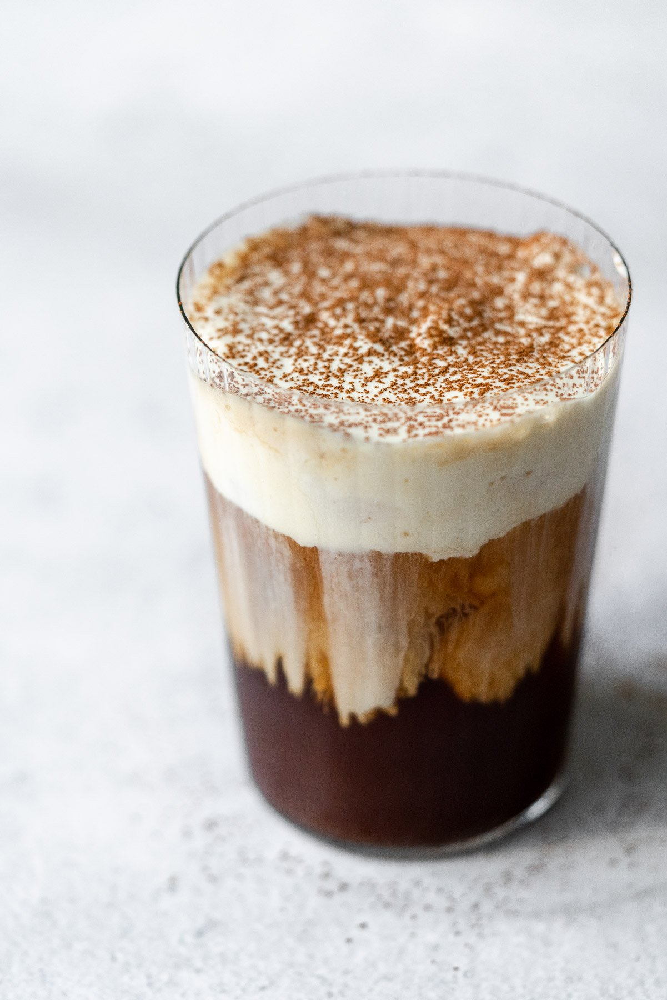

🇮🇪Irish Cream Cold Brew🇮🇪
A drink birthed in Ireland!
The irish Cream Cold Brew is a holiday exclusive at Starbucks. This drink is unlike any cold brew I have had! I recommend you follow along and find out for yourself!
Ingredients:
- 8 oz Cold Brew or Iced Coffee
- 1 1/2 tbsp Irish Cream Syrup
- 1/4 cup 2% milk (whole milk optional)
- 1 1/2 tsp vanilla syrup
- dash of cocoa
Steps:
- Add the cold brew or iced coffee to a glass along with the Irish cream syrup. Use a spoon and stir to combine.
- To make the cold foam, add the milk and vanilla syrup to a glass. Use an electric frother and whip until the milk has turned into a thick foam. If you do not have a frother, add the ingreients to a mason jar, seal, then shake until thick and foamy.
- Add ice to your glass, if desired, then slowly pour on the vanilla cold foam.
- Add a dash of cocoa and enjoy immediately.